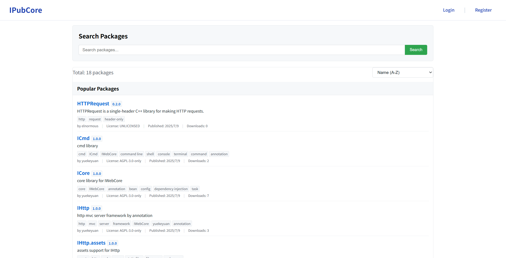

IPubCore 包服务器
本文档描述 IPubCore 的使用方法。
题外话
IWebCore整个框架的设计目标是对标于 Spring 的整个平台。IMakeCore 则是对标于 maven/gradle 这样的包管理工具的。所以除了 MakeCore 的内置包之外，用户也应该能够从远端自动下载包到本地，和项目一起编译运行。
所以在IWebCore的开发过程中，同样也编写了一个包管理的服务器，和IMakeCore的本地服务一同工作，用户可以配置 包管理服务器上的包，IMakeCore会自动下载这些包，并将包集成到项目中去。
这个地址之前是 https://pub.iwebcore.org，有一个正儿八经的域名，并且 https 也已经做好了。前期由于自己的事情太多，也没管的上这块的内容，先是 https 失效，后面是服务器续费不起，换了国内一年99块的服务器，国内的服务器不能绑定 .org / .io 这样的域名，之前的com 域名也被抢注，所以现在这个网站在裸奔了。用户可以直接使用 ip (115.191.52.106) 来访问 IPubCore网站。
另外，运营一个内容性质的网站不是把网站挂上去就行了，还需要考虑到用户上传的内容的合法性。这个需要消耗大量的精力，我也没有这个精力做这一个事情，所以用户可以注册，但是注册之后并不能上传自己的包，如果想上传包的话，请和我联系。
以下是正文：
IPubCore网站
IPubCore 网站是 IMakeCore 用于查找和下载包的网站，地址是 IPubCore ，http://115.191.52.106/。
IPubCore 是由 IWebCore 中 IHttpCore 框架编写的后端，react 编写的前端，这里推荐用户使用 IHttpCore 来编写自己的 http 服务器。
用户可以在这个网站上搜索各类的包，搜索到的包可以将包名和版本写到 packages.json 文件中去。IMakeCore 会自动下载该包，并集成该版本的包。
IPubCore 网站界面如下所示：

查找和使用包
用户在 搜索页面 输入关键字进行搜索。搜索到的包点击进去就可查看相关的详细信息。
注册和登录
用户通过网站顶部右上角的 登录 / 注册 按钮进行用户的注册和登录。
如何发布包
邮箱验证
发布一个包需要进行邮箱验证。
由于网站建设的原因，用户默认不能上传包，需要联系管理员进行申请。管理员会审核用户的申请，并给予相应的权限。
联系管理员 请使用注册的 email 地址 发送邮件到 管理员邮箱 进行确认。
用户发送邮件的时候，需要注明如下内容：
| I want to publish a package, so I send this email.
我发送这封邮件，我想发布一些包。
|
这里实在抱歉，等我挤出时间了，我一定吧这个给搞好（这个功能缺失很小，但是我现在一方面搞整个系统，一方面也在找工作，时间很紧张）。
打包
目前用户需要手动打包，在之后打包和上传的功能可以由 ipc 工具完成。
用户将能够加载到项目的独立包，直接使用 zip 工具打包成为 .zip 包即可。注意在打包的时候， package.json 文件必须在 zip 文件的根目录中，不能嵌套目录。
关于如何定义一个包，请参考定义包 的文档。
发布包
用户在登录之后，可以在右上角点击用户名，在弹出菜单中点击 My Package 按钮，跳转到 包管理 页面。在页面中，点击上传包，跳转到 包上传 页面，将打包好的包 拖拽进去，上传即可。
用户在发布包之前必须验证邮箱。
在上传的过程中，会对包的信息进行验证，如果验证不通过，请按照反馈信息进行修改。
ipc 与 IPubCore
用户可以在 ipc 工具中操作 IPubCore 中的内容
搜索
ipc search 命令可以搜索网络上的包, 如下内容是 搜索 json 相关的包。
| C:\Users\Yue>ipc search -- json
_____ _ _ _ _____
|_ _|| | | | | | / __ \
| | | | | | ___ | |__ | / \/ ___ _ __ ___
| | | |/\| | / _ \| '_ \ | | / _ \ | '__|/ _ \
_| |_ \ /\ /| __/| |_) || \__/\| (_) || | | __/
\___/ \/ \/ \___||_.__/ \____/ \___/ |_| \___|
Name LatestVersion Summary
yuekeyuan/json_struct 1.0.1 json_struct is a single header only C++ library for parsing JSON directly to C++ structs and vice versa
yuekeyuan/jsoncpp 1.9.6 A C++ library for interacting with JSON data
(yuekeyuan)/nlohmann.json 3.12.0 json library for C++
yuekeyuan/rapidjson 1.0.4 A fast JSON parser/generator for C++ with both SAX/DOM style API
yuekeyuan/simdjson 3.13.1 Parsing gigabytes of JSON per second : used by Facebook/Meta Velox, the Node.js runtime, ClickHouse, WatermelonDB, Apache Doris, Milvus, StarRocks
yuekeyuan/yyjson 0.11.1 The fastest JSON library in C
|
安装包
如果用户想要安装远程包，一般只需要将想要的包写在 程序 packages.json 文件中即可，此外用户也可以通过 ipc package install 命令安装包。ipc package install 的使用方法如下：
| C:\Users\Yue>ipc package install
_____ _ _ _ _____
|_ _|| | | | | | / __ \
| | | | | | ___ | |__ | / \/ ___ _ __ ___
| | | |/\| | / _ \| '_ \ | | / _ \ | '__|/ _ \
_| |_ \ /\ /| __/| |_) || \__/\| (_) || | | __/
\___/ \/ \/ \___||_.__/ \____/ \___/ |_| \___|
ERROR OCCURED: args list too short for argx to retrive data. arg count less than 1 [Cmd Path]: package install [Cmd Arg Type]: ArgX [ArgX Name]: packageName [ArgX Index]: 1
[CMD]:
ipc package install
[Memo]:
install package from remote to system
[Argx]:
Index Name TypeName Nullable Memo
1 packageName QString false to be installed package name
2 version QString true to be installed package version
|
它可以传入两个参数，一个是包名，另外一个是版本，版本可以省略，省略则请求最新的版本。所以用户如可想要安装 上面搜索到的 yuekeyuan/yyjson 这个包，可以使用如下的命令进行安装：
| C:\Users\Yue>ipc package install -- yuekeyuan/yyjson
_____ _ _ _ _____
|_ _|| | | | | | / __ \
| | | | | | ___ | |__ | / \/ ___ _ __ ___
| | | |/\| | / _ \| '_ \ | | / _ \ | '__|/ _ \
_| |_ \ /\ /| __/| |_) || \__/\| (_) || | | __/
\___/ \/ \/ \___||_.__/ \____/ \___/ |_| \___|
download from server: http://115.191.52.106
package installed. Name: yuekeyuan/yyjson Version: 0.11.1
|
此时，yuekeyuan@yyjson 这个包就安装好了。